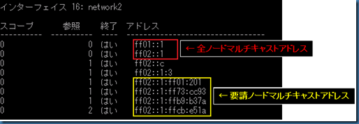

本記事は 2010 年 6 月 16 日に公開された記事を本ブログに移行した記事になります。
こんにちは。Windows プラットフォーム サポートです。
第二回の本稿では、IPv6 ホストが取得するアドレスの種類について説明します。
IPv6 では、IPv4 と比べて、多くの種類のアドレスを持ちますので、今回それらの内容を整理してご紹介したいと思います
IPv6 アドレスの種類
IPv6 ホストでは、最低限、以下の IPv6 アドレスを持ちます。
ループバック アドレス
リンク ローカル アドレス
グローバル ユニキャスト アドレス
全ノード マルチキャスト アドレス
要請ノード マルチキャスト アドレス
Windows 7 でのコマンド結果を例にして、それぞれのアドレスについて以下に説明します。
1. ループバック アドレス
IPv6 のループバック アドレスは、::1 となります。(IPv4 では、127.0.0.1)
“ping ::1” や “ping localhost” コマンドなどで、IPv6 ループバック アドレスへの疎通確認ができます。
次に、「2. リンク ローカル アドレス」、「3. グローバル ユニキャスト アドレス」について、以下の ipconfig、netsh コマンド結果を元に説明します。
2. リンク ローカルアドレス
リンク ローカル アドレスは、上記の IPv6 アドレスのうち、”fe80” (fe80::/64) で始まるアドレスです。
このアドレスは、IPv6 が有効化されているインタフェースで自己生成して自動的に設定されます。
また、同一リンク (サブネット) 上でのみ使用可能なアドレスで、IPv4 の ARP/GARP 等の機能を担う、ICMPv6 Neighbor Discovery 等で使用されます。例えば、グローバルアドレス取得前に送信する、ICMPv6 Router Solicitation の送信元アドレスとして使用されます。
<リンク ローカル アドレスのフォーマット>
3. グローバル ユニキャストアドレス
IPv6 グローバル スコープのアドレスは、2000::/3 のプレフィックスとなります。
Windows では、上記 ipconfig、netsh コマンドのとおり、以下の種類の設定により、複数のグローバル ユニキャストアドレスを取得します。
3-1. 手動構成 (Manual)
3-2. 自動構成 (Public)
3-3. DHCPv6 構成 (Dhcp)
3-4. 一時アドレス (Temporary)
3-1. 手動構成 (Manual)
Windows Vista 以降の OS では、以下のように、NIC のプロパティから、GUI にて IPv6 アドレスの設定ができるようになりました。(※Windows XP では、netsh コマンドからのみ設定可能)
3-2. 自動構成 (Public)
IPv6 ホストは、ルーターから ICMPv6 Router Advertisement (RA) により通知されるプレフィックス情報を元に、自身で IPv6 アドレスを自動構成します。
ルーターは、自身に設定された IPv6 アドレスのプレフィックス (例. 2001:1::) を配下のサブネットに通知します。IPv6 ホストは、64 bit のインタフェース ID 部分 (例. 6cd8:684c:7fcb:e51a) をランダムに構成し、プレフィックスに加えて IPv6 アドレス (例. 2001:1:: 6cd8:684c:7fcb:e51a) を自動構成します。IPv6 アドレスではインタフェース部分が 64bit もあるため、自動構成した IPv6 アドレスがホスト間で重複することはまずありませんが、念のため、重複検出も行ってから構成します。
3-3. DHCPv6 構成 (Dhcp)
IPv6 アドレスの割当てのみを考えると、上述の自動構成のみで十分ですが、DNS サーバーのアドレス設定などのためには、やはり DHCPv6 を利用したオプション設定が必要となります。
DHCPv6 では、IPv6 アドレスと DNS サーバー等のオプションを両方取得することも、IPv6 アドレスを除いてオプションのみを取得することも可能です。
IPv6 ホストがどのように DHCPv6 を利用するかについては、ICMPv6 RA の内の M/O Flag により制御されます。詳細は、次回以降で別途ご説明する予定です。
3-4. 一時アドレス (Temporary)
Windows クライアント OS (Windows 7/Vista) では、一時アドレス機能がデフォルトで有効となっています。Windows サーバー OS (Windows Server 2008R2/2008) ではデフォルトで無効です。
一時アドレス機能が有効な場合、ルーターから ICMPv6 RA により通知されるプレフィックスを元に、一時 IPv6 アドレスを自動的に構成します。
一時 IPv6 アドレスは、セキュリティを考慮して使用されるもので、DNS 動的登録の対象ではありません。そのため、他者から、一時 IPv6 アドレス宛の通信を受信することは通常ありません。
また、一時 IPv6 アドレスは、自身から発信される通信の送信元アドレスとして、優先的に使用されます。
netsh interface ipv6 show privacy
最後に、「4. 全ノード マルチキャスト アドレス」、「5. 要請ノード マルチキャストアドレス」について、以下の netsh コマンド結果も元に説明します。
netsh interface ipv6 show joins

4. 全ノード マルチキャストアドレス
以下の 2 つのアドレスが、IPv6 ホストが無条件に必ず参加する、全ノード マルチキャストアドレスです。
・ff01::1 = インタフェース ローカル スコープの全ノード マルチキャスト アドレス
・ff02::1 = リンク ローカル スコープの全ノード マルチキャスト アドレス
リンク ローカル スコープで使用する、ff02::1 が IPv4 のブロードキャストに相当するものとなります。
同一リンク (サブネット) 上の全ノードに送信される、ICMPv6 RA などの送信先アドレスとして、ff02::1 が使用されます。
5. 要請ノード マルチキャスト アドレス
要請ノード マルチキャスト アドレスは、リンク ローカルやグローバル ユニキャスト アドレスから自動的に決定されるもので、ff02::1:ff00::/104 のプレフィックスを持つマルチキャスト アドレスです。
例えば、以下のように、ユニキャスト アドレスから、要請ノード マルチキャスト アドレスが自動的に決定されます。
・ユニキャスト アドレス = 2001:1:: 6cd8:684c:7fcb:e51a
・要請ノード マルチキャスト アドレス = ff02::1:ffcb:e51a
要請ノード マルチキャスト アドレスは、IPv4 の ARP に相当する、ICMPv6 Neighbor Solicitation の宛先アドレスとして使用されます。
例えば、2001:1:: 6cd8:684c:7fcb:e51a 宛てに通信を行いたい場合、ICMPv6 Neighbor Solicitation を ff02::1:ffcb:e51a 宛てに送信して、L2 アドレス (MAC Address) の解決を試みます。
これにより、IPv4 ではブロードキャストの ARP を使用していた L2 アドレス解決を、IPv6 ではマルチキャストで実現しています。
以上、IPv6 ホストが取得する IPv6 アドレスの種類について簡単にご説明いたしました。
次回は、IPv6 の無効化方法についてお届けする予定ですので、よろしくお願いいたします。
以上、今回は IPv6 の無効化方法について、ご説明いたしました。
[ 特記事項 ]
本情報の内容（添付文書、リンク先などを含む）は、作成日時点でのものであり、予告なく変更される場合があります。